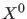

Next: Pseudo-arclength continuation Up: Mathematical aspects of numerical Previous: Prediction Contents
We assume that  is close to the curve. To find the point  on the curve we
use a Newton-like procedure. Since the standard Newton iterations can only be applied
to systems with the same number of equations as unknowns, we have to append an extra
scalar condition:
on the curve we
use a Newton-like procedure. Since the standard Newton iterations can only be applied
to systems with the same number of equations as unknowns, we have to append an extra
scalar condition: